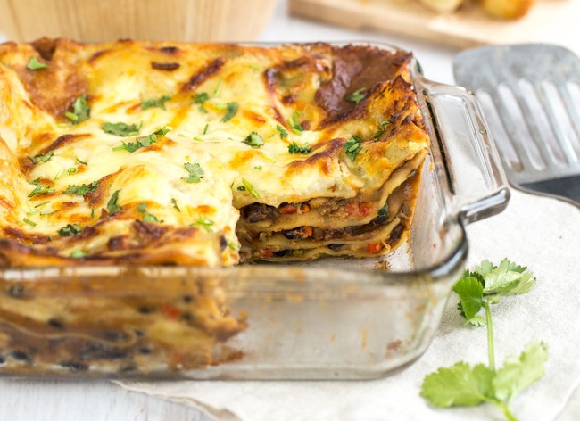

Lasagne

Plain oridinary lasagne without frills
An original Italian recipe! This plain lasagne can be quickly made without necessarily sacrificing quality.
It's excellent if you don't have the time to really apply yourself.
Ingredients
- 1 box of oven-ready lasagna noodles
- 1 jar (24 oz) marinara sauce
- 1 pound ground beef or Italian sausage
- 1 container (15 oz) ricotta cheese
- 2 cups shredded mozzarella cheese
- 1/2 cup grated Parmesan cheese
- 1 egg
- 1 teaspoon dried Italian seasoning
- Salt and pepper to taste
Steps
- Saute Aromatics - heat a non-reactive pot over medium heat. Melt in 4 Tbsp butter then sautee onions until softened and golden (10-12 min). Add minced garlic and saute another minute.
- Cook the Meat:
- In a large skillet, cook the ground beef or sausage over medium heat until browned. Drain excess fat.
- Add the jar of marinara sauce to the meat and stir well. Let it simmer for 5 minutes.
- Prepare the Cheese Mixture:
- In a bowl, mix together the ricotta cheese, egg, 1 cup of mozzarella cheese, 1/4 cup of Parmesan cheese, Italian seasoning, salt, and pepper.
- Assemble the lasagne:
- Spread a thin layer of the meat sauce on the bottom of a 9x13-inch baking dish.
- Spread a thin layer of the meat sauce on the bottom of a 9x13-inch baking dish.
- Spread 1/3 of the ricotta mixture over the noodles, then add 1/3 of the remaining meat sauce.
- Repeat the layers (noodles, ricotta, meat sauce) two more times.
- Top with the remaining 1 cup of mozzarella cheese and 1/4 cup of Parmesan cheese.
- Bake:
- Cover the dish with aluminum foil and bake for 25 minutes.
- Remove the foil and bake for an additional 10-15 minutes, until the cheese is bubbly and slightly browned.
- Serve:
- Let the lasagne cool for 5-10 minutes before slicing and serving.
Enjoy your delicious lasagne!